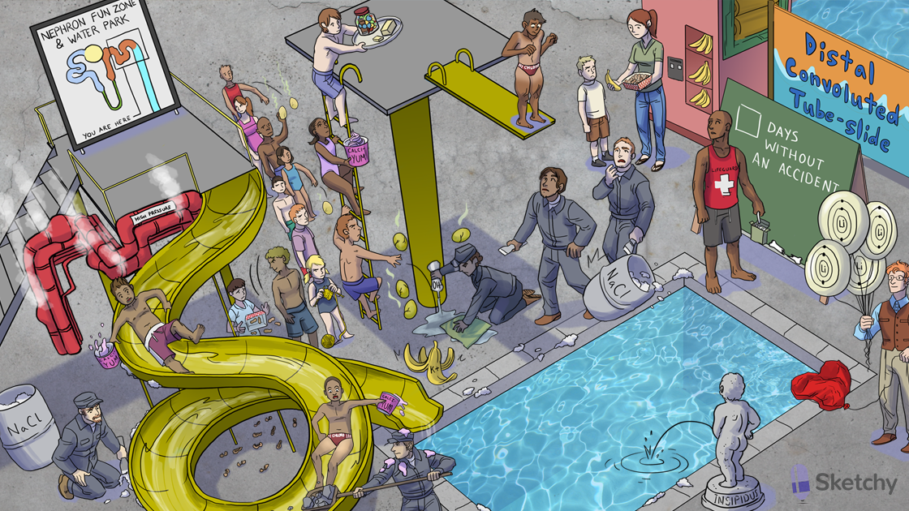

Distal convoluted tube slide: distal convoluted tubule (DCT)
Distal convoluted tubule (site of action of thiazide diuretics)
Banana vending machine: Na+/K+ ATPase on the basolateral membrane
Three P batteries: ATPase
Yellow tube slide: tubular lumen
Area outside slide: intracellular compartment
Sodium chloride salt scraper: NaCl cotransporter reabsorbs these ions at the apical membrane of the DCT
Active slider dropping calci-yum icecream: calcium is actively reabsorbed at the DCT (regulated by PTH)
Chloro-thighs: hydrochlorothiazide and chlorthalidone (thiazide diuretics)
Sodium chloride dumping into pool: thiazide diuretics inhibit NaCl reabsorption by blocking the NaCl cotransporter on the apical membrane (causing natriuresis)
Chloro-thighs kid dropping calci-yum: thiazide diuretics enhance calcium reabsorption
High pressure pipes: thiazide diuretics are one of the first line treatments for mild or moderate hypertension
Failing heart balloon: thiazide diuretics can be useful in the symptomatic treatment of heart failure (loop diuretics are first line)
Insipidus fountain: thiazide diuretics treat nephrogenic diabetes insipidus
Removing tube slide stones: thiazide diuretics can be used to prevent calcium stones (increased calcium reabsorption causes hypercalciuria)
New calcium chalk: thiazide diuretics may benefit patients with osteoporosis (due to increased calcium reabsorption)
Elevated calci-yum ice cream: thiazide diuretics can cause hypercalcemia
Elevated stick of butter: thiazide diuretics can cause hyperlipidemia
Elevated candy jar: thiazide diuretics can cause hyperglycemia
Yellow knitting needles: thiazide diuretics can cause hyperuricemia (can precipitate gout)
“Lift”ium balloons: thiazide diuretics can cause increased lithium levels
Banana peel: thiazide diuretics can cause hypokalemia (potassium wasting)
Spilled peanut shells: thiazide diuretics can cause hyponatremia
Rotten sulfur eggs: thiazide diuretics are sulfa drugs
Contracted bleach bottle: thiazides can cause contraction alkalosis